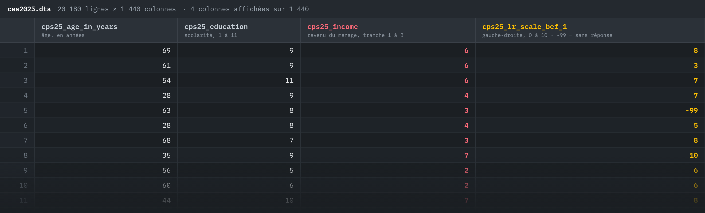

Laurence-Olivier M. FoisyPOL-2000 · séance 1 · jeu 3 sept
POL-2000 · Méthodologie quantitative
Introduction et les éléments fondamentaux de la recherche
Séance 1 · jeudi 3 septembre 2026
Département de science politique Faculté des sciences socialesAutomne 2026
À propos de moiPOL-2000 · séance 1 · jeu 3 sept
À propos de moi
Laurence-Olivier M. Foisy
Enseignement du parcours L'intelligence artificielle et la rechercheUniversité Laval · EIOM 2026
Enseignement du cours Introduction aux mégadonnées en sciences socialesUniversité de Montréal · FAS-1001
Doctorat en science politique, en coursUniversité Laval
Maîtrise en études de la paix internationaleUniversité Soka, Japon
Baccalauréat en études est-asiatiquesUniversité de Montréal
mail@mfoisy.com — deux semaines. Ensuite, Slack.
Un tour de sallePOL-2000 · séance 1 · jeu 3 sept
À main levée
Un cours de statistiques au cégep ?
Une ligne de code, n'importe laquelle ?
Qui paye pour un abonnement IA ?
Ce cours vous fait peur ?
Une questionPOL-2000 · séance 1 · jeu 3 sept
Le revenu affecte-t-il l'idéologie politique ?
Une questionPOL-2000 · séance 1 · jeu 3 sept
Comment le saurait-on ?
Une questionPOL-2000 · séance 1 · jeu 3 sept
Compter : 20 180 personnes, deux colonnes

Étude électorale canadienne 2025 · 20 180 répondant.e.s · 1 440 colonnes, dont ces quatre
Une questionPOL-2000 · séance 1 · jeu 3 sept
Une ligne de R
Pas de panique : vous n'avez pas à faire le calcul. Seulement à savoir que la fonction existe.
lm(cps25_lr_scale_bef_1 ~ cps25_income, data = ces)
Coefficient
Erreur-type
t
p
Constante
4,837
0,054
89,86
< 0,001
Revenu (tranche 1 à 8)
0,026
0,011
2,41
0,016
N = 15 590 · R² = 0,0004
Le plan de coursPOL-2000 · séance 1 · jeu 3 sept
Le plan de cours
pol2000.com/syllabus
Le plan de coursPOL-2000 · séance 1 · jeu 3 sept
01jeudi 3 septembre
Introduction et les éléments fondamentaux de la recherche
Une question, les mots pour la poser, et ce qu'il faut installer.
Le plan de coursPOL-2000 · séance 1 · jeu 3 sept
02jeudi 10 septembre
Introduction à R et à Positron
R à partir de zéro, en direct, sur votre ordinateur.
Apportez l'ordinateur — installé.
Le plan de coursPOL-2000 · séance 1 · jeu 3 sept
03jeudi 17 septembre
Les statistiques descriptives et la visualisation des données
Décrire une variable : la forme d'une distribution, son centre, sa dispersion. Et la dessiner.
Le plan de coursPOL-2000 · séance 1 · jeu 3 sept
04jeudi 24 septembre
Préparer ses données avec R
Lire un codebook, recoder, gérer les valeurs manquantes. Le vrai travail.
L'examen 1 ouvre aujourd'hui.
Le plan de coursPOL-2000 · séance 1 · jeu 3 sept
05jeudi 1er octobre
L'inférence statistique
Ce que je vois dans un échantillon, puis-je le dire de toute la population ?
Examen 1 à remettre dimanche 4 octobre.
Le plan de coursPOL-2000 · séance 1 · jeu 3 sept
06jeudi 8 octobre
Rencontres individuelles
Pas de cours magistral : on se voit, un.e à la fois, avec les auxiliaires et le tuteur.
Le plan de coursPOL-2000 · séance 1 · jeu 3 sept
07jeudi 15 octobre
La régression linéaire simple
Une droite qui résume une relation — et ce que ses chiffres veulent dire.
Le plan de coursPOL-2000 · séance 1 · jeu 3 sept
08jeudi 22 octobre
Examen 2, puis atelier de mi-session
Une heure d'examen sur papier, puis on travaille votre devis, ensemble.
Mi-session à remettre dimanche 25 octobre.
Le plan de coursPOL-2000 · séance 1 · jeu 3 sept
09jeudi 5 novembre
La régression linéaire multiple
Plusieurs variables explicatives à la fois. Ce que « contrôler pour » veut dire.
Le plan de coursPOL-2000 · séance 1 · jeu 3 sept
10jeudi 12 novembre
De la question au tableau de régression : à la main, puis avec l'IA
Le travail final, du début à la fin. D'abord vous, puis un agent d'IA — et on le vérifie.
Le plan de coursPOL-2000 · séance 1 · jeu 3 sept
11jeudi 19 novembre
Les graphes orientés acycliques (GOA)
Dessiner ses hypothèses causales. Décider quoi contrôler — ou pas.
Le plan de coursPOL-2000 · séance 1 · jeu 3 sept
12jeudi 26 novembre
Le problème fondamental de l'inférence causale
On ne voit jamais les deux mondes à la fois. Tout part de là.
Le plan de coursPOL-2000 · séance 1 · jeu 3 sept
13jeudi 3 décembre
Les biais
Variable omise, sélection, mesure, simultanéité : ce qui fausse une régression.
Le plan de coursPOL-2000 · séance 1 · jeu 3 sept
14jeudi 10 décembre
Les expériences, et révision
Le hasard comme méthode. Puis on revoit tout.
Examen 3 en classe · travail final vendredi 18 décembre.
Le plan de coursPOL-2000 · séance 1 · jeu 3 sept
Les évaluations
Examen 115 %
Examen 215 %
Examen 315 %
Mi-session20 %
Final25 %
DC5 %
DC5 %
Le plan de coursPOL-2000 · séance 1 · jeu 3 sept
Les examens : sur papier, exprès
1
Chez vous, sur R24 sept. → dim. 4 oct. · l'outil, c'est l'ordinateur
2
En classe, sur papierjeu. 22 oct. · 1 h · cahier ouvert
3
En classe, sur papierjeu. 10 déc. · 1 h · cahier ouvert
Les modèles de langue ne passent pas l'examen à votre place. Vos notes, oui. L'IA, c'est pour les travaux.
Le plan de coursPOL-2000 · séance 1 · jeu 3 sept
Un seul projet, en deux temps
MI-SESSION · 20 % · DIM. 25 OCT.
1La question
2X et Y
3Les hypothèses, et leur nulle
4La base de données
5Un graphe orienté acyclique
6Les statistiques descriptives
7La régression et son tableau
8L'interprétation, les biais, les limites
1Le devisVous posez la question. Je corrige.
↓
2Le projet completLe même document, quatre sections de plus.
La rétroaction arrive avant que vous écriviez la suite.
Le plan de coursPOL-2000 · séance 1 · jeu 3 sept
Datacamp
Un exercice par semaine, chez vous.Gratuit pour le cours. Corrigé sur-le-champ. 10 % de la note.
Introduction à R · Exercice 3 de 12
Consigne
Le vecteur ces$age contient l'âge de chaque répondant.e. Calculez la moyenne.
Utilisez la fonction mean().
Appuyez sur Soumettre.
# Calculez la moyenne de l'âge▍
>
ExécuterSoumettre la réponse
dim. 25 oct. · 5 %ven. 18 déc. · 5 %
Le plan de coursPOL-2000 · séance 1 · jeu 3 sept
Un retard
100 %à temps
90 %+1 jour
80 %+2 jours
70 %+3 jours
0+4 jours
Le plan de coursPOL-2000 · séance 1 · jeu 3 sept
L'intelligence artificielle
L'IA pour faire mieux, pas pour en faire moins.Un travail paresseux avec l'IA se repère en dix secondes. L'effort compte dans la note — et son absence aussi.
ces <- read_dta("ces2025.dta") lm(lr ~ income, data = ces)
> ▍
Positronl'éditeur, par Posit. Gratuit aussi.positron.posit.co
Le matérielPOL-2000 · séance 1 · jeu 3 sept
Un ordinateur portable, à chaque séance
WindowsmacOSLinuxN'importe lequel.
Pas d'ordinateur ? Venez me voir. Des solutions existent.
Le matérielPOL-2000 · séance 1 · jeu 3 sept
Slack
SlackLe seul canal du cours. Pas de courriel après deux semaines.lien d'invitation par courriel
# pol2000 · général
É
Étudiant.e 15h42
Mon fichier .dta ne s'ouvre pas dans Positron, erreur « cannot open file ». Quelqu'un ?
JP
Jules Piral 15h47
Vérifie le dossier de travail : Session > Set Working Directory. Le fichier est ailleurs.
É
Étudiant.e 15h49
Ça marche, merci !
Message #pol2000 · général
Le matérielPOL-2000 · séance 1 · jeu 3 sept
Datacamp
Un exercice par semaine, chez vous.Gratuit pour le cours. Corrigé sur-le-champ. 10 % de la note.
Introduction à R · Exercice 3 de 12
Consigne
Le vecteur ces$age contient l'âge de chaque répondant.e. Calculez la moyenne.
Utilisez la fonction mean().
Appuyez sur Soumettre.
# Calculez la moyenne de l'âge▍
>
ExécuterSoumettre la réponse
dim. 25 oct. · 5 %ven. 18 déc. · 5 %
Le matérielPOL-2000 · séance 1 · jeu 3 sept
Le livre
OUVRAGE DE RÉFÉRENCE · RIEN D'OBLIGATOIREAnalyse causale et méthodes quantitativesVincent Arel-Bundock · Presses de l'Université de Montréal · 2021
Toute la matière du cours, dans le même ordre. Quand une notion vous échappe en classe, elle est expliquée là une deuxième fois, autrement.
gratuit en PDF · pum.umontreal.ca
Le plan de coursPOL-2000 · séance 1 · jeu 3 sept
L'équipe
#Slackun seul canal, pour toute l'équipe, en tout temps
LOF
EnseignantLaurence-Olivier M. Foisyle cours, le plan, les notes, les cas particuliers
JP
AuxiliaireJules PiralR, les exercices, les travaux
MAD
AuxiliaireMarc-Antoine DupuisR, les exercices, les travaux
AM
TuteurAdam Ménardquand ça décroche : on reprend depuis le début
8 octobre · rencontres individuelles, toute l'équipepol2000.com · rendez-vous dans les plages publiées
Le plan de coursPOL-2000 · séance 1 · jeu 3 sept
Ce cours n'est pas enregistré.
Il se donne ici, le jeudi, à 15h30.
La version en ligne, asynchrone, existe — à l'hiver.
Le plan de coursPOL-2000 · séance 1 · jeu 3 sept
Des objections ?
C'est maintenant.
PausePOL-2000 · séance 1 · jeu 3 sept
Pause
Quinze minutes.
Les éléments fondamentauxPOL-2000 · séance 1 · jeu 3 sept
Les éléments fondamentaux
Le vocabulaire d'ici décembre.
Les éléments fondamentauxPOL-2000 · séance 1 · jeu 3 sept
De la curiosité à la question
UN SUJET
La participation électorale des jeunes.
On peut en parler. On ne peut pas y répondre.
↓
UNE QUESTION
Pourquoi les jeunes votent-ils moins ?
Mieux. Mais « pourquoi » ouvre sur mille réponses.
↓
UNE QUESTION TESTABLE
L’âge est-il associé à la probabilité de voter, chez les électeur.rice.s du Québec en 2022 ?
QUOIdeux choses à mesurerl'âge · voter ou non
CHEZ QUIune populationélecteur.rice.s du Québec, 2022
QUEL LIENune relation à vérifier« associé à »
Les éléments fondamentauxPOL-2000 · séance 1 · jeu 3 sept
X, et Y
Xla variable indépendante ce qui, selon nous, explique l'âge
→
Yla variable dépendante ce qu'on veut expliquer voter, ou non
?
Une question de recherche quantitative, c'est très au minimum un X et un Y.
Et une question seulement descriptive ? « Combien de jeunes votent ? » — un Y, sans X. Elle existe, elle est utile. Mais dès qu'on veut expliquer, il faut un X.
Les éléments fondamentauxPOL-2000 · séance 1 · jeu 3 sept
Une variable varie
1
2
3
4
5
6
7
8
9
10
11
12
Douze cas. Douze personnes sondées, par exemple.
VARIABLELa valeur change d'un cas à l'autre. La province, dans un sondage pancanadien.
CONSTANTELa même valeur partout. « Inscrit.e à Laval », dans un sondage mené à Laval. Il n'y a rien à expliquer.
Les éléments fondamentauxPOL-2000 · séance 1 · jeu 3 sept
Population, échantillon
Les éléments fondamentauxPOL-2000 · séance 1 · jeu 3 sept
Une ligne, c'est quoi ?
UNE LIGNE =une personneun sondageexemples illustratifs · 1 / 4
répondant.e
âge
scolarité
a voté
1
#001
34
universitaire
oui
2
#002
61
collégial
oui
3
#003
22
secondaire
non
4
#004
47
universitaire
oui
…
et des centaines, des milliers d'autres lignes
←chaque ligne est une unitéchaque colonne est une variable↑
Les éléments fondamentauxPOL-2000 · séance 1 · jeu 3 sept
Ce que les chiffres permettent
NominalDes catégories. Aucun ordre.le parti On compte. On ne classe pas, on ne moyenne pas.
OrdinalUn ordre. Des écarts inégaux.la scolarité On classe. La médiane a un sens; la moyenne, pas vraiment.
Intervalle · ratioUn ordre et des écarts égaux.l'âge · le revenu · 0–10 On calcule tout.
Les éléments fondamentauxPOL-2000 · séance 1 · jeu 3 sept
L'hypothèse, et sa nulle
H₁ · L'HYPOTHÈSE
Plus on est âgé, plus on vote.
H₀ · L'HYPOTHÈSE NULLE
L'âge ne change rien.
On ne prouve jamais H₁. On demande aux données de rejeter H₀. Séance 5.
Les éléments fondamentauxPOL-2000 · séance 1 · jeu 3 sept
Opérationnaliser
CONCEPT« Être à gauche » une idée, dans une tête
→on perd la nuance
DÉFINITIONSe situer soi-même sur un axe gauche-droite ce qu'on accepte de vouloir dire par là
→on perd le contexte
MESURE une échelle de 0 (gauche) à 10 (droite)
Chaque flèche perd quelque chose.Quelqu'un qui répond 5 : centriste, indifférent, ou mal à l'aise avec la question ? Le chiffre ne le dit pas. Une bonne mesure dit ce qu'elle perd.
Les éléments fondamentauxPOL-2000 · séance 1 · jeu 3 sept
La fiche
FICHE D'UNE RECHERCHE
1La question
Le revenu affecte-t-il l’idéologie politique ?
2Y · dépendante
placement gauche-droite, 0 à 10
3X · indépendante
revenu du ménage, 8 tranches
4Population
les électeur.rice.s canadien.ne.s, 2025
5Unité d’analyse
la personne sondée
6Niveaux de mesure
Y : intervalle · X : ordinal
7H₁ · H₀
plus riche, plus à droite · aucune relation
Votre travail de mi-session, c'est cette fiche — remplie, et justifiée.
Les éléments fondamentauxPOL-2000 · séance 1 · jeu 3 sept
À vous
FICHE D'UNE RECHERCHE
1La question
2Y · dépendante
3X · indépendante
4Population
5Unité d’analyse
6Niveaux de mesure
7H₁ · H₀
Une question de la salle. On remplit ensemble. Si une ligne résiste, la question n'est pas encore testable — c'est normal, c'est le travail.
Avant jeudi prochainPOL-2000 · séance 1 · jeu 3 sept
Avant jeudi prochain
Avant jeudi prochainPOL-2000 · séance 1 · jeu 3 sept
Dans cet ordre
1Rcran.r-project.org · le moteur
→
2
Positron
R 4.x trouvé ✓ > ▍
Positronpositron.posit.co · l'éditeur
✓ Positron trouve R tout seul.
1
Positron
Aucun interpréteur R > ▍
Positron
→
2R
✗ Positron s'ouvre, ne trouve rien, et tout semble cassé. Refaites l'ordre.
Avant jeudi prochainPOL-2000 · séance 1 · jeu 3 sept

 R le langage. Gratuit, libre, partout.
R le langage. Gratuit, libre, partout.